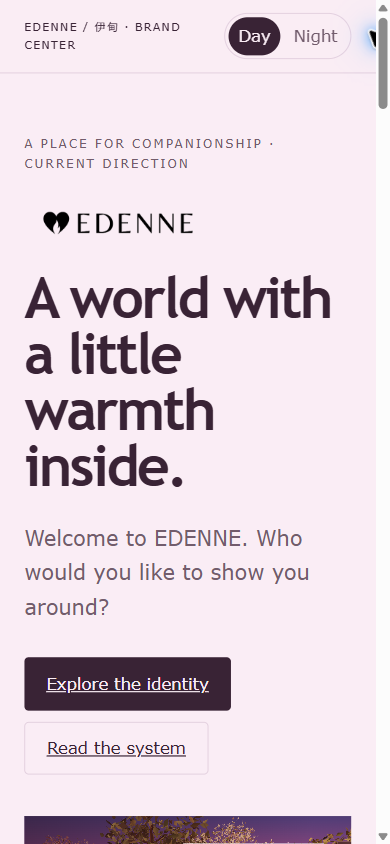
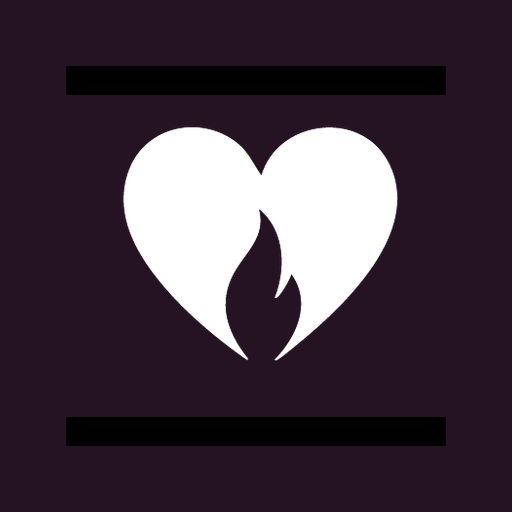

Companion world / Identity & interactive prototype
A place
for presence.
A heart with a little warmth inside. A world that begins with a welcome. Edenne brings identity, character and place into one invitation.

Original garden prototype / Captured 7 September 2026. The scene is shown as it exists, not rebuilt for this case.
Not just a face.
Somewhere to return.
The project direction starts with companionship: a welcome, a chosen guide and a shared place. The garden is the setting, not a decorative background pasted onto a product page.
The challenge is to hold warmth and adult sophistication together. The identity should make space for character, conversation and care without turning every moment into a spectacle.
02 / Brand identity
Warmth, held in a system.
The supplied heart/flame and custom wordmark lead a day-and-night identity. They are original design exports, never approximated with typed text.

Trebuchet MS
A place for presence.
Brand-center display / system font
Day / a gentle arrival
Verdana
The same welcome, closer to hand.
Brand-center body / system font
Night / a quieter presence
The original heart / flame.
Held constant across changing light.
Two settings, one identity
#FAEDF5Day#392335Day text#FF9BD3Day accent#251323Night#D8419ANight accentDay welcomes.
Night holds.
Come inside.
Warm white leads. Plum grounds the words. Blossom becomes a welcoming accent. This is an editorial identity plate, not a product screen.Stay a little longer.
The same supplied mark against deep plum. Fuchsia is reserved for the living signal and moments of choice.who gets you.
Trebuchet MS / The current brand-center UI study: open, friendly, still adult. Not a replacement for the custom wordmark.
A little room to stay.
Verdana / Current brand-center body study. The garden’s existing interface retains its own prototype typography; its captures are unaltered.
Choose a guide.
Enter the world.
The working welcome presents five existing companions inside the furnished pavilion. Character selection precedes the invitation to explore.
This is the real prototype, including its current interface and copy. It demonstrates a visual and interaction direction; it does not establish working AI conversation, persistent memory or available hardware.

The feeling,
made repeatable.
{kind=link}
{kind=link}
The working brand center contains an older garden reference image. The fresh garden and companion captures above show the current prototype. Earlier rejected logo proposals are not used.
The same welcome,
closer to hand.

{kind=link}

A name in the world.
A symbol at small scale.
{kind=link}

An identity you can see.
A world still becoming.
What is established
The supplied heart/flame master and custom wordmark; current brand-center colors and type studies; existing desktop garden and companion welcome; responsive mobile web views. Screenshots preserve the source scene and characters.
What is not a launch claim
The companion connection, memory behavior, hardware specifications, sales availability, native app release and commercial results were not verified. Source-page product statements are not adopted as case-study facts. Final production rules, character rights and publication credits require review.